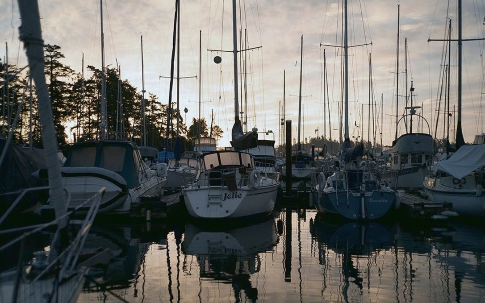

moorage
Living at anchor, that is, in a bay somewhere tethered to the earth with ground tackle is free. Some bays will have moorings installed that you can tie to for a small fee (often around $10-15 per day). Living at anchor is the cheap way to go, although getting a good anchor and rode is important as it will keep your boat safe.
Marinas often have guest docks with power, WiFi and showers, for a medium-to-high cost ($300-$800.) The longer the boat though, the bigger the cost. Some marinas charge per dock space rather than boat size, beware of these places. Moorage near cities is more expensive, and the price goes up during the high season (summer). Winter moorage is generally much cheaper.
Paying for annual moorage is a good idea, but keeping a boat in a marina means getting liability insurance, which in turn, means you'll need a survey, resulting in a seemingly interminable domino effect which can incur many more costs. Depending on the age of your boat, and when it was last surveyed (if ever), you may need a full condition out-of-water survey. This means paying a marina to lift your boat out, and paying the surveyor. A surveyor will point out mandatory items that need fixing and/or replacing, if these items are not complied with within 60 days the insurance will be void.
Living aboard your boat will cause wear from regular use of the space. If staying at a marina in your home country for long periods, paying for liveaboard fees (up to $150 extra per month) is necessary. If staying in a marina in a foreign country, liveaboard fees are often waived. Some marinas charge for electricity and water, be sure to take that into account, especially if you have plans to winter there and that your heating is electric. In winter, marinas charge less than in the high season. A marina that charges 900$ per month in the summer can charge 500$ in the winter.